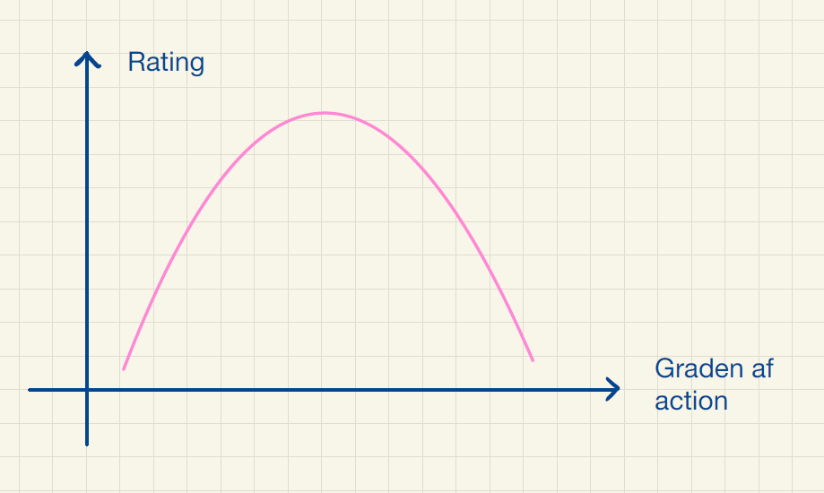
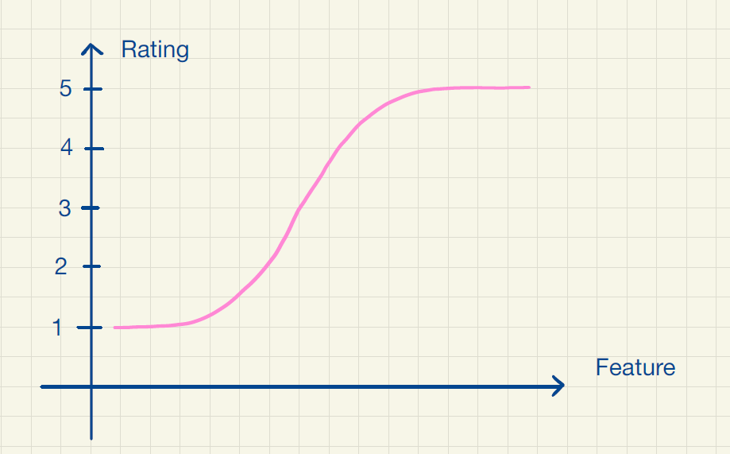

Anbefalingssystemer
Hvad skal du se på Netflix?

Oplægget her bruger noten Anbefalingssystemer
Bagefter skal vi prøve (dele af) forløbet Hvad skal du se på Netflix?
Typer af anbefalingssystemer
- Samarbejdsbaseret (Collaborative filtering):
- Adfærd sammenlignes med andre.
- Anbefales noget baseret på lignende brugere.
- Indholdsbaseret (Content based filtering):
- Profil for hver bruger, der beskriver, hvilken type indhold, brugeren godt kan lide.
- Anbefales noget af samme type.
En samarbejdsbaseret algoritme
I noten er der en simpel algoritme baseret på betingede sandsynliger.
God træning i at udregne betingede sandsynligheder og genopfriske definitionen.
Udelades i vores gennemgang i dag.
Indholdsbaseret algoritme til ratings
Forestil dig de gode gamle dage, hvor streamingtjenester brugte ratings med 1-5 stjerner…
Vi ønsker at forudsige den enkelte brugers rating ud fra egenskaber (features) ved filmen.
Simple eksempler på features:
- \(x_1\): Hvor mange procent af filmen er kærlighedsscener.
- \(x_2\): Hvor mange procent af filmen er actionscener.
Multipel lineær regression
Prædiktion af brugerrating \(r\) for film med features \(x_1\) og \(x_2\): \[ \hat{r}=b + a_1x_1 + a_2x_2.\]
Vi kalder \(b\), \(a_1\) og \(a_2\) brugerens vægte (parametre).
- \(b\) rating af film uden action og kærlighed
- \(a_i\) ændring i rating ved ændring fra \(x_i\) til \(x_i+1\) med alt andet uændret.
Generelt: \[\hat{r} = b+ a_{1}x_{1} + a_{2}x_{2} + \dotsm + a_{M}x_{M}\]
Data til estimation af vægte
| \(x_1\) | \(x_2\) | Rating | |
|---|---|---|---|
| Film 1 | 0 | 40 | 4 |
| Film 2 | 10 | 50 | 5 |
| Film 3 | 10 | 10 | 1 |
| Film 4 | 30 | 0 | 1 |
Estimation af vægte
Tabsfunktion baseret på \(\hat{r}_{j} = b+a_{1}x_{1j} + a_{2}x_{2j}\): \[E= (r_{1}-\hat{r}_{1})^2 + (r_{2}-\hat{r}_{2})^2 + \dotsm + (r_N-\hat{r}_N)^2,\]
Partielle afledede kan findes og sættes lig nul: \[ \begin{aligned} &\frac{\partial E}{\partial a_i} = -2x_{i1}(r_1-\hat{r}_1) - \dotsm -2x_{iN}(r_N-\hat{r}_N) = 0\\ \\ &\frac{\partial E}{\partial b} = - 2(r_1-\hat{r}_1) - \dotsm - 2(r_N-\hat{r}_N) = 0 \end{aligned} \]
Mere fleksible modeller
- Feature engineering

- Neurale netværk

Samarbejdsbaserede modeller for ratings
Multipel lineær regressionsmodel var kun for en enkelt bruger.
Samarbejdsbaseret tilgang udnytter viden om hvordan andre brugere har ratet filmene.
Vi kigger på model baseret på matrixfaktorisering, som stammer fra 2006 udgaven af konkurrencen “The Nexflix Prize”.
Data
| Film 1 | Film 2 | Film 3 | |
|---|---|---|---|
| Bruger 1 | 1 | NA | 4 |
| Bruger 2 | 2 | NA | 5 |
| Bruger 3 | 3 | 3 | 1 |
| Bruger 4 | NA | NA | 1 |
Matrixfaktorisering
- Vi indfører \(M\) featurevægte \(x_{1j},\ldots,x_{Mj}\) for hver film \(j=1,\dots,p\).
- Den \(i\)te brugers præferencer for de \(M\) features beskrives ved præferencevægtene \(a_{i1},\ldots,a_{iM}\) for \(i=1,\dots,n\).
- Vi modellerer så \(i\)te brugers rating af \(j\)te film ved:
\[ \hat{r}_{ij} = a_{i1}x_{1j} + a_{i2}x_{2j} + \dotsm + a_{iM}x_{Mj} \]
- Vi bruger altså \(M\cdot p + M\cdot n\) vægte til at modellere \(n\cdot p\) ratings.
Kaldes matrixfaktorisering fordi
- Modellen er \(\hat{R} = AX\) i matrixform:
\[ \begin{bmatrix} \hat{r}_{11} & \hat{r}_{12} & \cdots & \hat{r}_{1p}\\ \hat{r}_{21} & \hat{r}_{22} & \cdots & \hat{r}_{2p}\\ \vdots & \vdots & & \vdots\\ \hat{r}_{n1} & \hat{r}_{n2} & \cdots & \hat{r}_{np}\\ \end{bmatrix} = \begin{bmatrix} a_{11} & \cdots & a_{1M}\\ a_{21} & \cdots & a_{2M}\\ \vdots & & \vdots\\ a_{n1} & \cdots & a_{nM}\\ \end{bmatrix} \begin{bmatrix} x_{11} & x_{12} & \cdots & x_{1p}\\ \vdots & \vdots & & \vdots\\ x_{M1} & x_{M2} & \cdots & x_{Mp}\\ \end{bmatrix} \]
- En “low-rank” approksimation med latente variable.
Estimation af vægte
Tabsfunktion: \[E=\sum_{r_{ij} \neq NA} (r_{ij}-\hat{r}_{ij})^2 \]
Gradientnedstigning vha. partielle afledede: \[ \begin{aligned} \frac{\partial }{\partial a_{im}} (r_{ij}-\hat{r}_{ij})^2 = -2 (r_{ij}-\hat{r}_{ij})x_{mj}\\ \frac{\partial }{\partial x_{mj}} (r_{ij}-\hat{r}_{ij})^2 = -2 (r_{ij}-\hat{r}_{ij})a_{im} \end{aligned} \]
Moderne anbefalingssystemer
En blanding af samarbejdsbaseret og indholdsbaseret.
Rækkefølge bliver vigtig.
Transformer-baserede modeller.
Hands-on
aimat.dk > undervisningsforløb > Hvad skal du se på Netflix?
Elevtid: 2 x 90 min
Jeres tid: 45 min
Vi springer over opgave 1-3 i første omgang. I kan vende tilbage hvis I får tid.